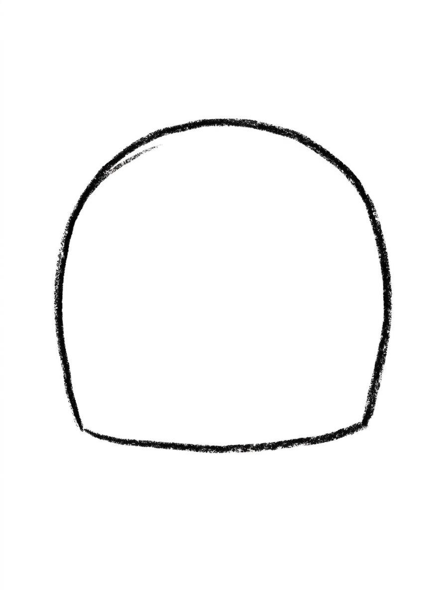
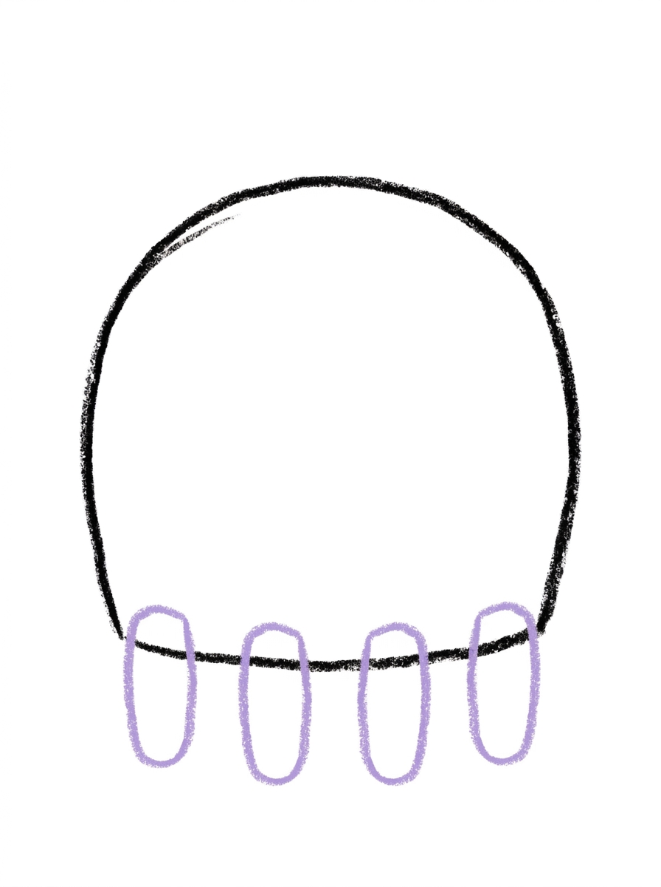
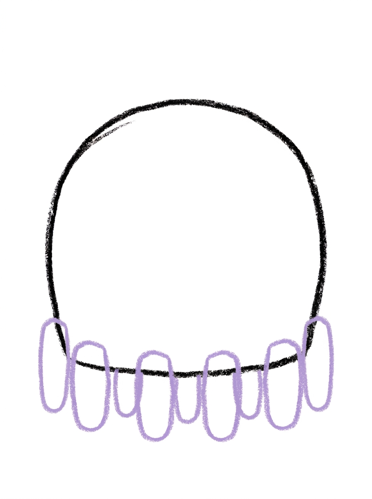
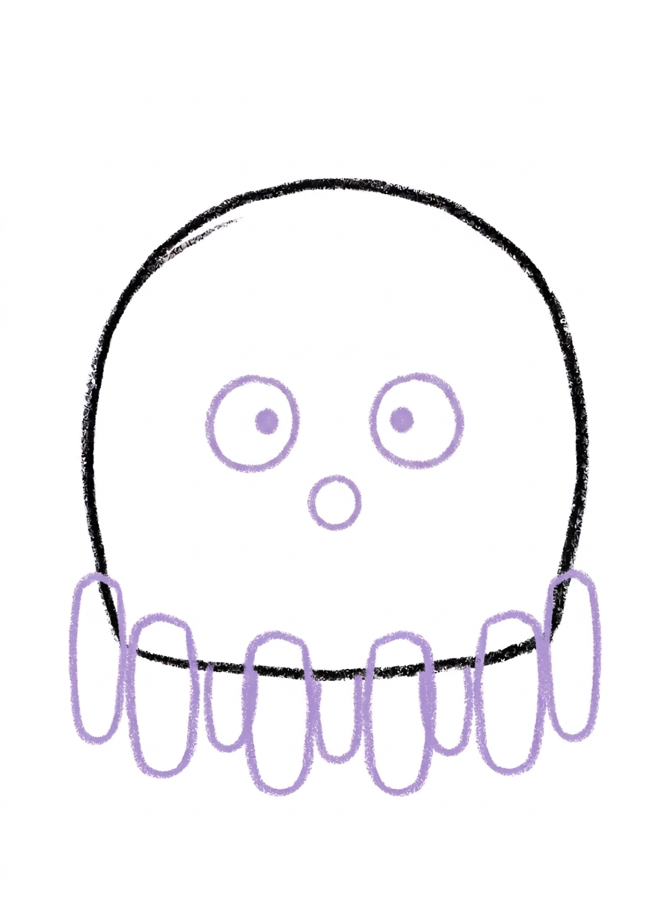
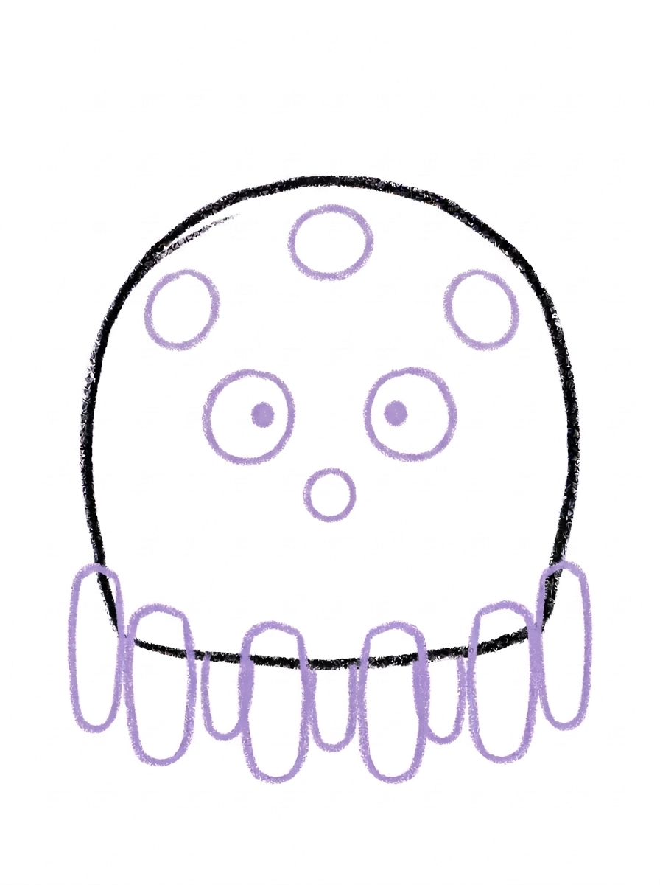

Octopus Drawing for Kids How to Draw An Octopus in 6 Easy Steps
Quick Answer
Draw an octopus in six easy steps: start with one big dome for the head and body, add four rounded legs along the bottom, then four more legs to make eight, draw a circle-dot face, sprinkle on three spots, and color it purple. Made for ages 3 and up — no signup needed, just print and draw.
At a Glance
- Subject: How to draw an octopus
- Ages: 3+
- Steps: 6 steps
- Time: ~15 min
- Difficulty: Easy
- Supplies: Paper, crayons
The octopus is a perfect first sea animal to draw: one big squishy dome does almost all the work, and the rest is just wiggly legs. Kids love counting the legs as they appear — four in one step, four more in the next — until their octopus has all eight.
✏️ Draw Your Octopus in 6 Easy Steps
One step per box — this step by step octopus drawing shows each new part in a different color so kids can see exactly what changed.
Step 1: The Head and Body

Draw one big dome shape with a round top and a flatter bottom. This is your octopus's head and body.
Step 2: Four Legs

Draw four rounded tube legs hanging from the bottom of the dome, spaced evenly along the bottom edge. Round the end of each leg.
Step 3: Four More Legs

Draw four more rounded tube legs along the bottom of the dome — one tucked between each pair of legs and one just outside each end leg. Now your octopus has eight legs.
Step 4: The Face

Draw two round eyes in the middle of the dome, each one a circle with a dot in its center. Below and between the eyes, draw one small circle for the mouth.
Step 5: The Spots

Draw three round spots on the dome — one near the top center, one on the upper left, and one on the upper right.
Step 6: Color It In

Color your octopus! Soft purple for the head, body and legs, darker purple for the three spots and the mouth circle, and white eyes with black center dots. Great drawing!
📊 Octopus Drawing by Age
Every age can join in — just adjust the job.
| Age | What they can do | Tip |
|---|---|---|
| 3-4 | Draw the big dome and color the finished octopus purple. | Make the dome really big — a bigger dome leaves lots of room for eight legs underneath. |
| 4-5 | Draw the first four legs and help count out the four more that make eight. | Point to each gap as you count together so the extra legs land between the first ones. |
| 6+ | Complete all six steps solo, including the eye dots and the three spots. | Let them experiment with spot patterns — more spots, fewer spots, or tiny dots everywhere. |
🖨️ Download Your Free Octopus Drawing Printable
The printable lays out all 6 steps one per box, big enough for little hands — kids draw right alongside each step.
⬇️ Open Free Printable 🖨️ Print🎁 Free printable for ages 3+
🐙 Octopus Counting Parade
Turn the finished octopus into a counting game: write a tiny number from 1 to 8 at the end of each leg, then have your child point and count them in order, backwards, and by touching only the even numbers. For a bigger challenge, color each leg a different color and call out a color for them to find and count to. The drawing becomes a number chart they made themselves.
What You'll Need to Draw An Octopus
All you need is a pencil, an eraser, and the printed tutorial page. For coloring, soft purple and darker purple crayons or markers match the finished picture, plus black for the eye dots. A blue sheet of paper or a blue crayon for water around the octopus is a fun extra if your child wants to finish the scene.
What They're Learning
This tutorial is built on one dome shape, rounded tubes for legs, and circles for the eyes, mouth, and spots. The biggest skill hiding inside it is counting: the legs arrive in two groups of four, so kids practice counting to eight in a way they can see and touch, and spacing the legs evenly along the dome's bottom edge builds early measuring and planning skills.
Make It Yours
Once the first octopus is done, try a rainbow octopus with a different color on every leg, a tiny baby octopus next to a big one, or an octopus wearing a party hat on top of its dome. Kids also love drawing their octopus holding things — an ice cream cone, a book, or a balloon in the end of a curled leg.
🛒 Our Favorite Drawing Supplies
These are the supplies we reach for in our own home — washable (because kids), quality paper, and enough colors to avoid fights.
As an Amazon Associate, MomYouNeedThis earns from qualifying purchases — at no extra cost to you.
💡 Octopus Drawing Tips for Parents
Steps 2 and 3 are where the counting happens: four legs first, then four more tucked between and beside them to make eight. If your child loses track, have them touch each finished leg while counting out loud before drawing the next one. A useful trick is to draw the two end legs of the second group first, then fill the gaps in the middle.
Keep the dome large and its bottom edge fairly flat and wide. A small or very round dome runs out of room for legs quickly, and crowded legs are the main reason an octopus drawing feels 'off' to a child. If space gets tight, slightly thinner legs fix it without starting over.
✏️ Octopus Drawing Step by Step
This octopus drawing is built around a single dome, and every later step works in its own band of that dome: the legs hang below its bottom edge, the face sits in its middle, and the spots decorate its top. Because each feature has its own territory, nothing your child draws later has to squeeze past something already on the page.
The placement that matters most is keeping those bands separate. The three spots belong up high — one near the top center and one on each upper side — because the middle of the dome is reserved for the two eyes, with the mouth below and between them. Spots that drift down into the middle crowd the face, and the octopus starts to look speckled instead of spotted.
The legs have one rule of their own: each one starts right on the dome's bottom edge and hangs down from it. A leg that starts below the edge, floating in space, is disconnected from the body — if one lands there, extending its top up to touch the edge fixes it without redrawing the whole leg.
See free octopus printable for more.
✏️ One Shape Per Step, Six Steps Total
Run these quick checks as the octopus drawing grows, and most wobbles get caught while they are still one shape to fix. After step three, count the rounded tips along the bottom edge out loud: there should be exactly eight. If the count comes up seven or nine, the widest or narrowest gap between tips shows where the missing or extra leg belongs.
After step four, check the face as a set: two round eyes side by side, each with its dot in the center, and one small mouth circle below and between them. If the mouth touches an eye, it has crept too high — it should sit in the open space underneath the pair.
Finish with the spots and colours. The three spots should read as a loose triangle — one high in the middle, one on each upper side, all three clearly above the eyes. In step six the spots and the mouth go a darker purple than the rest of the body; if a spot ends up the same shade as the dome, the pattern disappears.
See free octopus printable for more.
🐙 Counting the Octopus Legs
Turn the finished octopus into a camouflage game. Real octopuses change colour to blend in with their surroundings, so draw the same six steps two or three more times on one big sheet and colour each octopus to hide somewhere different: blue-grey for open water, sandy yellow-brown for the sea floor, green for a patch of seaweed.
Colour the backgrounds first — a wavy blue stretch, a sandy stretch, a few green strands — then let your child settle each octopus where its colours hide it best. Swap drawings with a partner and see who can spot all the hidden octopuses fastest.
Keep one octopus in the tutorial's soft purple as the one that is not hiding. Comparing the hiders against it shows your child exactly how much of the drawing's look is shape and how much is colour.
See free octopus printable for more.
❓ Octopus Drawing FAQs
What is the easiest way to draw an octopus for kids?
Draw one big dome for the head and body, hang four rounded legs from the bottom, add four more legs to make eight, then finish with circle eyes, a small circle mouth, and three spots.
What age is this octopus drawing for?
It is made for ages 3 and up. Younger kids can draw the dome and join in the coloring, while older kids can space and count all eight legs themselves.
What supplies do we need?
Just a pencil, an eraser, and crayons or markers — soft purple and dark purple match the example, plus black for the eye dots.
Is the printable really free?
Yes — every printable on MomYouNeedThis is 100% free to download and print. No signup, no payment, just tap the download button.
How do I print the octopus tutorial?
Print at 100% scale, not 'fit to page', so the step pictures stay their true size. Regular letter paper works perfectly.
How many legs does an octopus have?
Eight — and this tutorial draws every one of them: four legs in step two, then four more tucked in during step three, so kids can count all eight at the end.
What if the legs come out crowded or uneven?
That is normal and still looks great — real octopus arms wiggle in every direction. If space runs out, make the last legs a little thinner rather than starting over.
Can my child color the octopus a different color?
Absolutely. Purple matches the example, but octopuses change color in real life, so a red, orange, or rainbow octopus is a scientifically sound choice.
📚 Keep Exploring
- ✏️ All 53 Drawing Tutorials 53 free step-by-step drawing tutorials for kids.
- 🐾 Animal Coloring Free printable animal coloring pages for little learners.
- ✏️ Drawing Practice Free printable drawing pre-writing worksheet for toddlers.